The GOATs of Game of Thrones
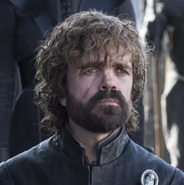
Tyrion Lannister
"Everyone’s always asking me to believe in things; family, gods, kings, myself. It was often tempting, until I saw where belief got people. So I said 'no thank you' to belief; yet, here I am....I believe in you."

Davos Seaworth
"If we don't put aside our enmities and band together, we will die. And then it doesn't matter whose skeleton sits on the Iron Throne."

Jorah Mormont
"It's tempting to see your enemies as evil, all of them, but there is good and evil on both sides of every war ever fought."
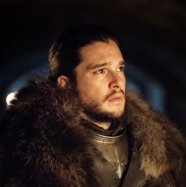
Jon Snow
"The Free Folk can’t stop them, the Night’s Watch can’t stop them and all the southern kings can’t stop them! Only together. All of us. And even then it may not be enough, but at least we give the fuckers a fight."

Olenna Tyrell
"You look like an angry little boy. Don't presume to tell me what I need."
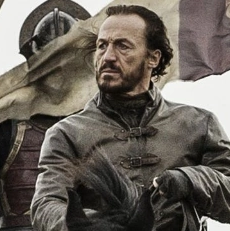
Bronn
"I've had an exciting life. I want my death to be boring."

Arya Stark
"Leave one wolf alive... and the sheep are never safe."
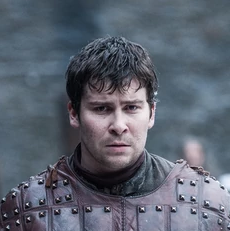
Podrick Payne
"I already gave them an answer, my lord."
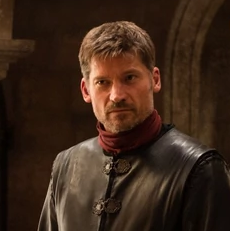
Jaime Lannister
"He judged me guilty the moment he set eyes on me. By what right does the wolf judge the lion? By what right?"

Theon Greyjoy
"I don't want to be forgiven. I can never make amends to your family for the things I've done."
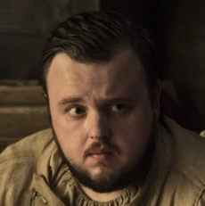
Samwell Tarly
"Sometimes a man has to make hard choices, choices that might look wrong to others, but you know are right in the long run."
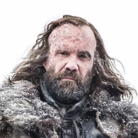
Sandor Clegane
"There's plenty worse than me. I just understand the way things are."
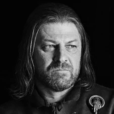
Eddard Stark
"You think my life is such a precious thing to me, that I would trade my honor for a few more years... Of what?"

Robb Stark
"Tell Lord Tywin, winter is coming for him. Twenty thousand northerners marching south to find out if he really does shit gold."
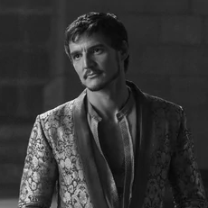
Oberyn Martell
"Tell your father I am here, and tell him the Lannisters aren't the only ones who pay their debts."
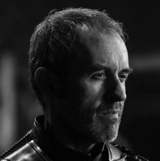
Stannis Baratheon
"If a man knows what he is and remains true to himself, the choice is no choice at all. He must fulfill his destiny and become who he is meant to be, however much he may hate it."

Barristan Selmy
"Just once in my life, before it's over, I want to know what it's like to serve with pride, to fight for someone I believe in."
Queen of Thorns Messing With Cersei


 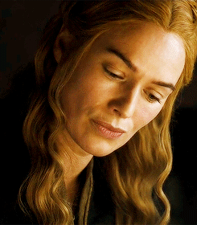
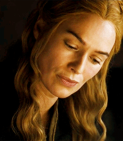
Stannis the Grammar Mannis

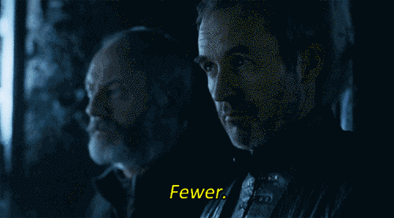